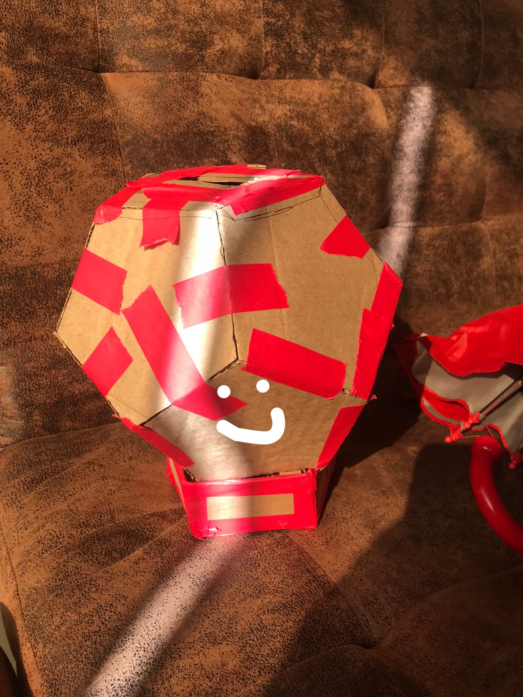

Diseño 3D
Prototipo de la lampara
Diseño 3D

Corte Lacer
 Se realizo un diseño en Illustrator para el corte laser de las partes de la lampara y poder cortarlas en piezas
de madera.
Se realizo un diseño en Illustrator para el corte laser de las partes de la lampara y poder cortarlas en piezas
de madera.
Cambios
El primer modelo de maqueta fue armado con cartón, sin embargo para solidificar la estructura se realizo un cambio en el modelo exterior de la lampara.